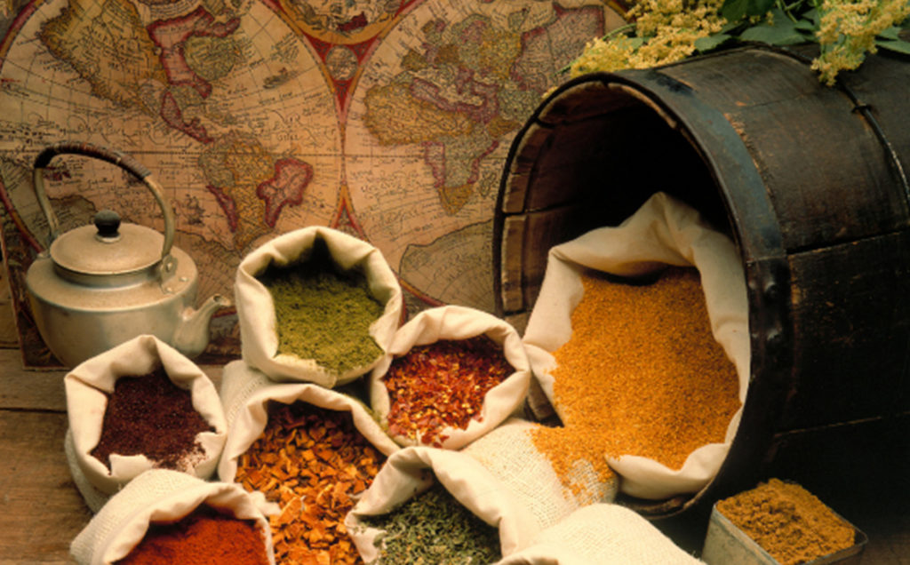

🌍 Proyecto "Sabores del Mundo": El Desafío de Jimena
👩🍳 El Contexto
Nuestra empresa de catering internacional, "Sabores del Mundo", está en un momento clave de expansión. Jimena, nuestra jefa de compras, tiene un reto importante sobre la mesa: necesitamos incorporar nuevos proveedores de materias primas procedentes de Vietnam, Brasil y Rumanía para garantizar la autenticidad de nuestros nuevos menús.
Sin embargo, la gestión no es sencilla. Debemos equilibrar la calidad artesanal, los costes de importación y la logística, asegurando siempre que cumplimos con los estándares de sostenibilidad de la empresa.
🎯 ¿Cuál es tu misión?
En este Reto Profesional (Nº 5), trabajaréis como técnicos del Departamento de Compras. Vuestro objetivo es investigar el mercado internacional y presentar una estrategia de aprovisionamiento sólida que permita a Jimena tomar la decisión final con total seguridad.
🚀 ¿Qué vamos a conseguir?
Al finalizar este proyecto, habréis desarrollado competencias clave en:
- Investigación de mercados: Búsqueda activa de proveedores reales.
- Análisis técnico: Evaluación de presupuestos y plazos de entrega.
- Toma de decisiones: Justificación de la estrategia de suministro.
- Competencia Digital: Uso de herramientas colaborativas y gestión de incidencias (Protocolo GRIT).
Imagen: Los sabores del Mundo Un Viaje por la Historia del Comercio de las Especias.

{kind=link}